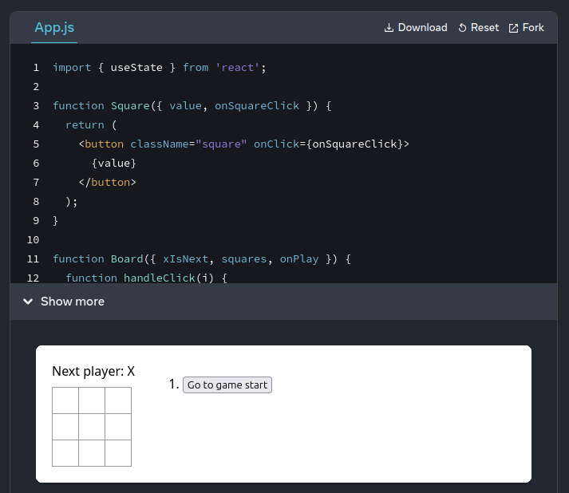
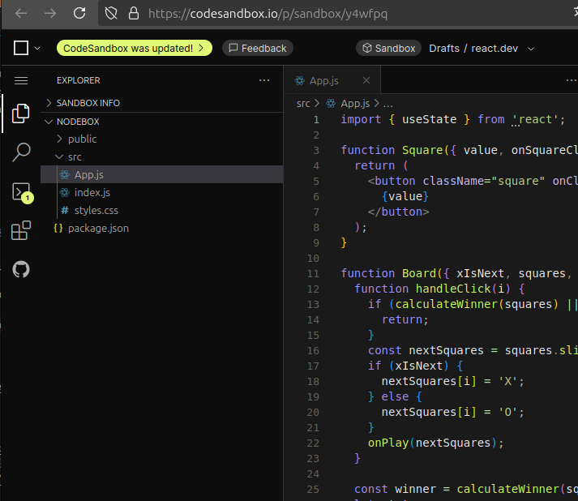
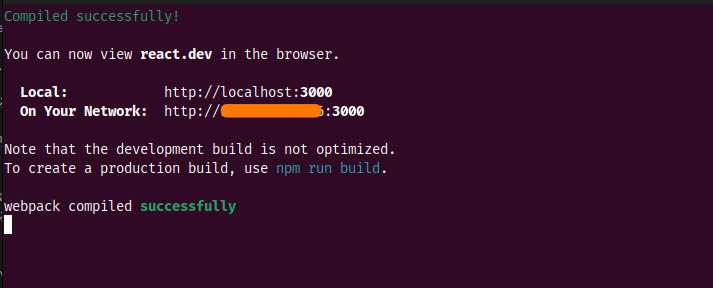
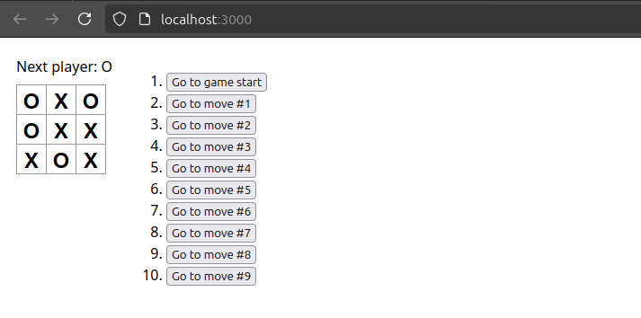

React のお勉強

React について勉強中。
いや，今までにも React / TypeScript なプロジェクトに参加したことはあるんだけど，ある程度お膳立てされた状態での join だったので，正直 React や TypeScript を知らなくても（やっつけの知識で）コードは書けるしテストも出来るわけよ。 知らない言語でもコードなんて見れば分かるし。 でも，それってプロジェクトが終われば忘れるぢゃん，身に付いてないんだから。
というわけで，ちょうど新しいプロジェクトのための事前学習を始めたタイミングということもあり，勤務先の有識者に最初から教えてもらえることになった。 ただし，その前に公式サイトの学習ページ（日本語があるのか）は読んでおいてね，と言われ，スキマ時間で勉強を始めたのだが… JSX から始めるのか。 よしやってみよう。
JSX で簡単なコードを書くだけなら特別な開発環境も要らないしフレームワークも要らないらしい。
準備として HTML の <head> 要素に以下の記述を加えればよい。
<script src="https://unpkg.com/@babel/standalone/babel.min.js"></script>
<script async src="https://ga.jspm.io/npm:es-module-shims@1.7.0/dist/es-module-shims.js"></script>
<script type="importmap">
{
"imports": {
"react": "https://esm.sh/react?dev",
"react-dom/client": "https://esm.sh/react-dom/client?dev"
}
}
</script>
@babel/standalone は JSX から JavaScript (React.createElement の式) への変換を行うものらしい。
コードはこんな感じに記述する。
<div id="root1"></div>
<script type="text/babel" data-type="module">
import React from 'react';
import { createRoot } from 'react-dom/client';
const MyApp = function() {
return <strong>Hello, world!</strong>;
}
const container = document.getElementById('root1');
const root = createRoot(container);
root.render(<MyApp />);
</script>
強調している部分が JSX の特徴的な部分で HTML タグ風の記述（JSX 要素）が使えるため Web デザイナーでもとっつきやすいというのが売りなんだそうな。
ユーザが定義した MyApp() 関数の名前をタグのように使えるのがポイント。
タグは XML と同じ仕様なので void タグについては <MyApp /> のように明示する必要がある。
このコードを含む HTML ファイルをブラウザで表示すると以下のような表示になる。
うんうん。 ちゃんと動いてるな。
HTML タグ記法を JSX の記法に変換する “HTML to JSX” というツールもある。
チュートリアルのコードをローカルで試したい場合。
まずは node.js のインストールを済ませておくこと。 私は NodeSource から v22 LTS 版を入れている。 最近は Bun の話もよく聞くようになった。

右上にある Fork を押下すると CodeSandbox のページが開く。

{kind=link}
左上にある □ を押下して表示されるメニューから “Download Sandbox” を選択してコードをまるごと（zip 形式）ダウンロードし，ローカルの適当なディレクトリに展開する。
npm install を実行して依存ライブラリをインストールしようとしたのだがエラーになって怒られたので --legacy-peer-deps オプションを付けてやり直す。
今度はうまく行ったが deprecated の嵐（笑）
いよいよ npm start でローカルサーバを起動しようとしたのだが，またしてもエラーで起動せず orz どうも npm audit fix --force で依存関係を更新しないといけないらしい。
しかもこれを実行するたびに状況が変わるってどうなってるの？？？
ホンマ，この辺のテキトーさが node.js 開発系が嫌な理由なんだよな。 しかも依存が深すぎて？ 何をどうしていいのか分からない。 みんなこれちゃんとメンテ出来てるの？
ぶちぶちと愚痴を垂れつつ npm start を再実行。
とりあえず動いたかな。

{kind=link}
npm start

{kind=link}
動いてるっぽいな。
さて，お勉強を続けますか。
ブックマーク
参考文献

- TypeScriptとReact/Next.jsでつくる実践Webアプリケーション開発
- 手島 拓也 (著), 吉田 健人 (著), 高林 佳稀 (著)
- 技術評論社 2022-07-25 (Release 2022-07-25)
- 単行本（ソフトカバー）
- 4297129167 (ASIN), 9784297129163 (EAN), 4297129167 (ISBN)
- 評価
仕事用に購入。版元で電子版が買える。必要なところだけつまみ食い的に参照している。